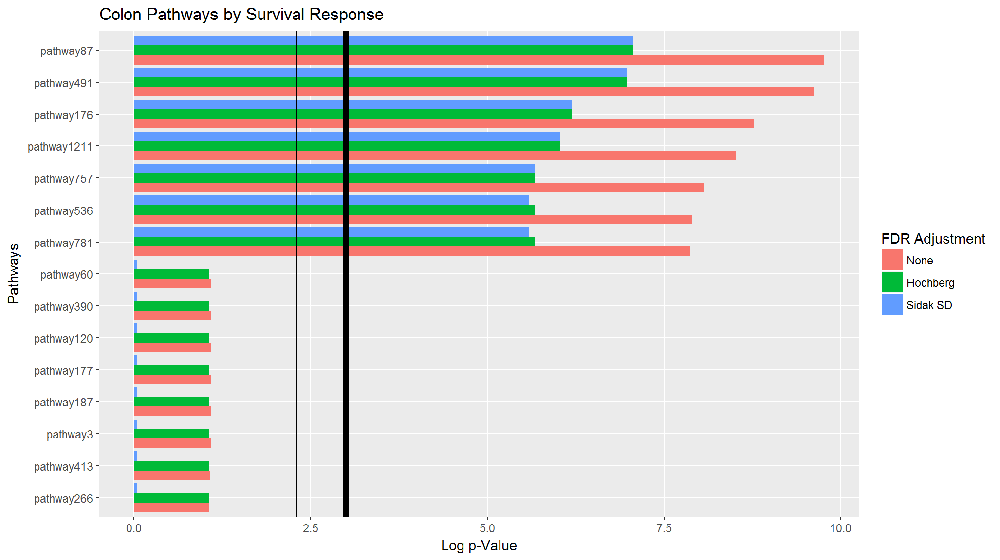
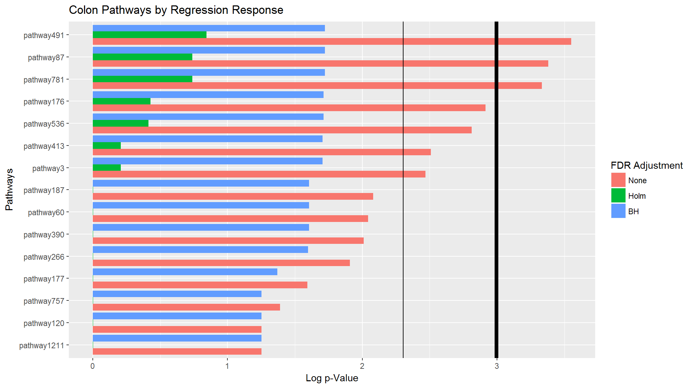
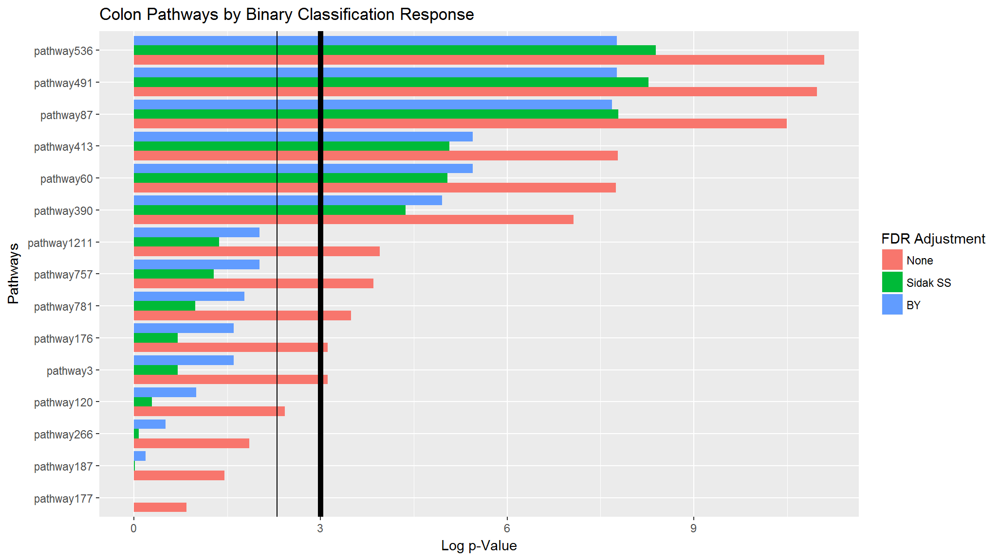

vignettes/Supervised_PCA_Walkthrough.Rmd
Supervised_PCA_Walkthrough.RmdThis will provide the steps to perform pathway-level supervised PCA analysis, from data entry to pathway \(p\)-value graphics. This vignette will give three examples: survival, regression, and binary responses. The main goal of pathway supervised PCA is to discover potential relationships between pathways (bundles of genes) and a response. This package (in its current form) should not be used for prediction, or regressing on multiple variables, but should simply be used to screen or identify potential pathways for futher inspection.
Before we begin, make sure you have the latest version of the package. In order to install a package from GitHub, you will need the devtools:: package (https://github.com/r-lib/devtools) and either Rtools (for Windows) or Xcode (for Mac). Then you can install the development version of the pathwayPCA package from GitHub:
devtools::install_github("gabrielodom/pathwayPCA")library(pathwayPCA)
library(parallel)For our pathway analysis to be meaningful, we need gene expression data (from a microarray or something similar), corresponding subject information (such as weight, type of cancer, or survival time and censoring indicator), and a gene set list. For Supervised PCA, the pathwayPCA:: does not currently support for analysis of predictors or responses with missingness. Please remove observations and features with missing entries. We may add support for missing values in a future version.
For this example we have a colon cancer data set. We will load and inspect this data. We will return to the gene name discussion when we import the gene set list.
data("colonSurv_df")
str(colonSurv_df, list.len = 10)
#> Classes 'tbl_df', 'tbl' and 'data.frame': 250 obs. of 658 variables:
#> $ OS_time : num 64.9 59.8 62.4 54.5 46.3 ...
#> $ OS_event: int 0 0 0 0 1 0 0 0 1 0 ...
#> $ JUN : num 9.29 9.13 9.37 10.6 8.7 ...
#> $ SOS2 : num 5.48 6.35 5.67 4.94 5.6 ...
#> $ PAK3 : num 8.21 8.33 7.82 8.79 8.75 ...
#> $ RAF1 : num 8.03 7.94 7.74 7.64 8.05 ...
#> $ PRKCB : num 5.49 6.26 6.05 5.37 6.07 ...
#> $ BTC : num 6.65 7.02 7.52 6.87 6.49 ...
#> $ SHC1 : num 8.26 8.39 8.69 7.81 8.45 ...
#> $ PRKCA : num 8.94 9.61 8.4 9.8 8.21 ...
#> [list output truncated]This data set has 656 gene expression measurements on 250 colon cancer patients. Notice that this data frame is in tidy form (a tidy data matrix has \(n\) rows, one for each observation, and \(p\) columns, one for each gene or protein measured). If your data frame is not tidy, you should transpose it. (Note that transposition in R will yield an object of class matrix, so use as.data.frame() to turn the transposed matrix back into a data frame.)
We have an expression design matrix with the first two columns as subject response information. We will consider the overall patient survival time (and corresponding censoring indicator) as our survival response response, the event time as our regression response, and event indicator as our binary classification response (these are just for example).
survTime_num <- colonSurv_df$OS_time
dead_logi <- as.logical(colonSurv_df$OS_event)
dead_fact <- as.factor(colonSurv_df$OS_event)
cancers_df <- colonSurv_df[, -(1:2)]
rm(colonSurv_df)Notice that I put the responses in specific classes: survival data is stored in numeric and logical vectors, regression data is stored in a numeric or integer vector, and binary classification data is stored in a factor. This is on purpose: the data creation functions in the pathwayPCA:: package have very specific requirements about the types of data they take as inputs. We’ll come back to this topic when we create our first Omics*-class objects.
For pathway-based analyses to work, we need a well-defined list of pathways.
data("colon_pathwaySet")
(geneset_ls <- colon_pathwaySet)
#> Object with Class(es) 'pathwaySet', 'list' [package 'pathwayPCA'] with 2 elements:
#> $ pathways:List of 15
#> $ TERMS : chr [1:15] "KEGG_PENTOSE_PHOSPHATE_PATHWAY" ...
str(geneset_ls$pathways, list.len = 10)
#> List of 15
#> $ pathway3 : chr [1:27] "RPE" "RPIA" "PGM2" "PGLS" ...
#> $ pathway60 : chr [1:64] "RPE65" "CYP3A5" "UGT2B28" "CYP4A11" ...
#> $ pathway87 : chr [1:87] "JUN" "SOS2" "PAK3" "RAF1" ...
#> $ pathway120 : chr [1:89] "HLA-DOA" "HLA-DOB" "KLRC3" "KLRD1" ...
#> $ pathway176 : chr [1:54] "CASP9" "SOS2" "E2F1" "PRKCB" ...
#> $ pathway177 : chr [1:30] "HLA-DRB4" "HLA-DRB5" "HLA-DOA" "HLA-DOB" ...
#> $ pathway187 : chr [1:16] "IKBKG" "CHUK" "EP300" "RELA" ...
#> $ pathway266 : chr [1:11] "PRF1" "DFFA" "DFFB" "HMGB2" ...
#> $ pathway390 : chr [1:29] "JUN" "BAG4" "CASP8" "MAPK8" ...
#> $ pathway413 : chr [1:23] "PLD1" "RAF1" "EPHB2" "VAV1" ...
#> [list output truncated]
rm(colon_pathwaySet)The information stored in the gene set list is very important to our analysis, and the form of this information must be discussed carefully. This gene set list has class pathwaySet and contains the following components
pathways: a list of character vectors. Each character vector contains a subset of column names in the cancers_df data frame. These pathways should not be too short, otherwise we devolve the problem into simply testing individual genes. Therefore, the pathwayPCA:: package requires each pathway to have a minimum of three genes with recorded expressions in the predictor data frame. Important: some protein set lists have proteins markers recorded as character numerics, so make sure the column names of your data frame have an overlap with the gene or protein names in the set list. Ensure that there is a non-null set overlap between the names in the pathways and the column names of the predictor data frame. Not every column from the cancers_df data frame will be in a pathway gene set, and not every gene set in each pathway will be recorded in the data frame. However, for meaningful results, there should be a significant overlap between the genes measured in the data frame and the gene names sorted into the pathways. If your gene set list has very few matching genes in your data frame, then your pathway-based analysis results will be significantly degraded. Make sure your pathway set and data frame are compatible.
TERMS: a brief description of the pathways in the pathways list, stored as a character vector.setsize: the number of genes originally recorded in each pathway, stored as an integer vector. This information is useful to measure the ratio of the number of genes from each pathway expressed in your data to the number of genes defined to be in that pathway. This ratio should be very close to 1 for best pathway analysis results results. (The expressedOmes() function is useful for extracting the expressed genes from each pathway set, and it is called automatically in the Supervised PCA workflow.)Omics*-class Object for Pathway AnalysisNow that we have our data loaded, and we have checked that each piece of data is in the correct form, we can create an analysis object for the pathwayPCA:: package. In this package, all primary input data will by an Omics* object. Each response type has a specific creation function:
create_OmicsSurv() function to create an object with class OmicsSurv. This object will contain:
eventTime: a numeric vector of event timeseventObserved: a logical vector of death (or other event) indicators. This format precludes the option of recurrent-event survival analysis.assayData_df: a tidy data frame of prediction information. Rows are observations or subjects; the columns are gene, protein, transcriptome, proteome, or metabolome measures. The column names must match a subset of the genes provided in the gene set list (in the pathwaySet object).pathwaySet: a list of pathway information, as described in the “Load Gene Set List” section. The names of the genes in these pathways must match a subset of the genes recorded in the prediction data frame (in the assayData_df object).create_OmicsReg() function to create an object with class OmicsReg. This object will contain:
response: a numeric vector of the responseassayData_df: a tidy data frame of prediction information, as described above.pathwaySet: a list of pathway information, as described above.create_OmicsCateg() function to create an object with class OmicsCateg. In future versions, this function will be able to take in n-ary responses and ordered categorical responses, but we only support binary responses for now. This object will contain:
response: a factor vector of the responseassayData_df: a tidy data frame of prediction information, as described above.pathwaySet: a list of pathway information, as described above.OmicsSurv ObjectUsing the survival response information, we will create a valid OmicsSurv object for further analysis with the pathwayPCA:: functions. Remember, it is vitally important to input your data in the forms described above. Because we are creating an OmicsSurv object, we will need event times as a numeric vector and death indicator as a logical vector.
colon_OmicsSurv <- create_OmicsSurv(assayData_df = cancers_df,
pathwaySet_ls = geneset_ls,
eventTime_vec = survTime_num,
eventObserved_vec = dead_logi)
colon_OmicsSurv
#> Formal class 'OmicsSurv' [package "pathwayPCA"] with 4 slots
#> ..@ eventTime : num [1:250] 64.9 59.8 62.4 54.5 46.3 ...
#> ..@ eventObserved: logi [1:250] FALSE FALSE FALSE FALSE TRUE FALSE ...
#> ..@ assayData_df :Classes 'tbl_df', 'tbl' and 'data.frame': 250 obs. of 656 variables:
#> ..@ pathwaySet :List of 3
#> .. ..- attr(*, "class")= chr [1:2] "pathwaySet" "list"Because the assayData_df and pathwaySet objects contain a lot of information, we use the max.level option within the str() function to prevent recursive structure printing. We can also repeat this to create regression and classification objects for further analysis. However, I will mention this again: it is vitally important to create your data objects correctly. As the old computer science saying goes—garbage in, garbage out.
OmicsReg ObjectFollowing our previous step in creation of a survival object, we can create a data object for regression response.
colon_OmicsReg <- create_OmicsReg(assayData_df = cancers_df,
pathwaySet_ls = geneset_ls,
response_num = survTime_num)
colon_OmicsReg
#> Formal class 'OmicsReg' [package "pathwayPCA"] with 3 slots
#> ..@ response : num [1:250] 64.9 59.8 62.4 54.5 46.3 ...
#> ..@ assayData_df:Classes 'tbl_df', 'tbl' and 'data.frame': 250 obs. of 656 variables:
#> ..@ pathwaySet :List of 3
#> .. ..- attr(*, "class")= chr [1:2] "pathwaySet" "list"OmicsCateg ObjectAnd we can also create our data object for binary classification response. As we mentioned previously, we do not yet support other GLM models, but we are working on it.
colon_OmicsCateg <- create_OmicsCateg(assayData_df = cancers_df,
pathwaySet_ls = geneset_ls,
response_fact = dead_fact)
colon_OmicsCateg
#> Formal class 'OmicsCateg' [package "pathwayPCA"] with 3 slots
#> ..@ response : Factor w/ 2 levels "0","1": 1 1 1 1 2 1 1 1 2 1 ...
#> ..@ assayData_df:Classes 'tbl_df', 'tbl' and 'data.frame': 250 obs. of 656 variables:
#> ..@ pathwaySet :List of 3
#> .. ..- attr(*, "class")= chr [1:2] "pathwaySet" "list"pathwaySet ListAs we mentioned above, the gene set list (as a pathwaySet object, or a gene set list you’ve created yourself) will be modified upon Omics* object creation. Before, this list only had two elements, pathways and TERMS. Now, it has a third element: setsize—the number of genes contained in each pathway.
colon_OmicsSurv@pathwaySet
#> Object with Class(es) 'pathwaySet', 'list' [package 'pathwayPCA'] with 3 elements:
#> $ pathways:List of 15
#> $ TERMS : Named chr [1:15] "KEGG_PENTOSE_PHOSPHATE_PATHWAY" ...
#> $ setsize : Named int [1:15] 27 64 ...The analysis functions within the pathwayPCA:: package subset the feature data frame by the genes in each pathway. Therefore, if we have genes in the pathways that aren’t recorded in the data frame, then we will necessarily create missing (NA) predictors. To circumvent this issue, we should check if each gene in each pathway is recorded in the data frame, and remove the genes for which we have not recorded expression levels.
However, if we remove genes from the pathways which do not have recorded levels in the predictor data frame, we could theoretically remove all the genes from a pathway. Thus, we will also check to make sure that each pathway still has three or more genes present after we have removed the genes without corresponding expression levels. The expressedOmes() function performs these two actions simultaneously. This function takes in a valid Omics*-class object, removed the unexpressed genes from each pathway, subsequently trims the pathways that have fewer than three genes, and finally returns an object of the same Omics* class as the input. If there are any pathways that are removed due to this execution, the pathways list within the pathwaySet object within each Omics* object will have a character vector of the pathways removed stored as the "missingPaths" attribute. Access this attribute with the attr() function.
This function is called and executed within the superPCA_pVals() function.
We now have a clean set of Omics* objects. We will
Of note: we use the FDR adjustments executed in the mt.rawp2adjp function from the Bioconductor package multtest. We copied the code from this function into our package, and made some slight modifications. However, we do not depend on this package directly. We acknowledge their work in this area and express our gratitude.
We will use all but two of our available cores, and use the Hochberg (1988) and Sidak Step-Down FDR-adjustment procedures.
a <- Sys.time()
surv_pVals_df <- superPCA_pVals(object = colon_OmicsSurv,
parallel = TRUE,
numCores = 2,
adjustpValues = TRUE,
adjustment = c("Hoch", "SidakSD"))
#> Of the 676 unique genes in the input pathway set, 9.0% were not expressed in
#> the input data and were therefore removed.
#> After trimming unexpressed genes from the 15 supplied pathways, we removed 0
#> pathway(s) because they contained 3 or fewer genes.
#> Of the 656 measured genes in the input data frame, 93.8% were included in at
#> least one pathway after trimming.
#> Initializing Cluster
#> DONE
#> Calculating Pathway Test Statistics in Parallel
#> DONE
#> Calculating Pathway Critical Values in Parallel
#> DONE
#> Calculating Pathway p-Values
#> Adjusting p-Values and Sorting Pathway p-Value Data Frame
#> DONE
Sys.time() - a
#> Time difference of 5.505751 secsWe will use the Holm (1979) and Benjamini and Hochberg (1995) FDR-adjustment procedures.
b <- Sys.time()
reg_pVals_df <- superPCA_pVals(object = colon_OmicsReg,
parallel = TRUE,
numCores = 2,
adjustpValues = TRUE,
adjustment = c("Holm", "BH"))
#> Of the 676 unique genes in the input pathway set, 9.0% were not expressed in
#> the input data and were therefore removed.
#> After trimming unexpressed genes from the 15 supplied pathways, we removed 0
#> pathway(s) because they contained 3 or fewer genes.
#> Of the 656 measured genes in the input data frame, 93.8% were included in at
#> least one pathway after trimming.
#> Initializing Cluster
#> DONE
#> Calculating Pathway Test Statistics in Parallel
#> DONE
#> Calculating Pathway Critical Values in Parallel
#> DONE
#> Calculating Pathway p-Values
#> Adjusting p-Values and Sorting Pathway p-Value Data Frame
#> DONE
Sys.time() - b
#> Time difference of 5.042285 secsWe will use the Sidak Single-Step and Benjamini and Yekutieli (2001) FDR-adjustment procedures.
d <- Sys.time()
categ_pVals_df <- superPCA_pVals(object = colon_OmicsCateg,
parallel = TRUE,
numCores = 2,
adjustpValues = TRUE,
adjustment = c("SidakSS", "BY"))
#> Of the 676 unique genes in the input pathway set, 9.0% were not expressed in
#> the input data and were therefore removed.
#> After trimming unexpressed genes from the 15 supplied pathways, we removed 0
#> pathway(s) because they contained 3 or fewer genes.
#> Of the 656 measured genes in the input data frame, 93.8% were included in at
#> least one pathway after trimming.
#> Initializing Cluster
#> DONE
#> Calculating Pathway Test Statistics in Parallel
#> DONE
#> Calculating Pathway Critical Values in Parallel
#> DONE
#> Calculating Pathway p-Values
#> Adjusting p-Values and Sorting Pathway p-Value Data Frame
#> DONE
Sys.time() - d
#> Time difference of 7.371436 secsNow that we have the pathway-specific \(p\)-values, we can inspect the top pathways by significance. We will first subset the data frame returned by the superPCA_pVals() function, then plot the most significant \(p\)-values using the ggplot2:: package. For graphics, we will need two new packages:
library(tidyverse)
#> -- Attaching packages ------------------------------------------------------------------------------------------------------------------- tidyverse 1.2.1 --
#> v ggplot2 2.2.1 v purrr 0.2.4
#> v tibble 1.4.2 v dplyr 0.7.4
#> v tidyr 0.8.0 v stringr 1.3.0
#> v readr 1.1.1 v forcats 0.3.0
#> -- Conflicts ---------------------------------------------------------------------------------------------------------------------- tidyverse_conflicts() --
#> x dplyr::filter() masks stats::filter()
#> x dplyr::lag() masks stats::lag()
library(reshape2)
#>
#> Attaching package: 'reshape2'
#> The following object is masked from 'package:tidyr':
#>
#> smithsFor each pathway \(p\)-value data frame, we will select the top pathways, and transform the data for better graphics. Then, we will plot the pathway \(p\)-values for the most significant pathways as a horizontal bar chart. The thick vertical black line is at \(p = 0.05\), and the thin vertical black line is at \(p = 0.10\).
# Melt the data
surv_melt_df <- surv_pVals_df %>%
select(-terms, - setsize, -trim_size) %>%
melt(id.vars = "pathways") %>%
mutate(score = -log(value)) %>%
mutate(pathways = factor(pathways,
levels = rev(unique(pathways)),
ordered = TRUE))
# Plot Melted Data
ggplot(surv_melt_df) +
aes(x = pathways, y = score, fill = variable) +
geom_bar(stat = "identity", position = "dodge") +
scale_fill_discrete(name = "FDR Adjustment",
breaks = c("rawp", "Hochberg", "SidakSD"),
labels = c("None", "Hochberg", "Sidak SD")) +
ggtitle("Colon Pathways by Survival Response") +
xlab("Pathways") +
ylab("Log p-Value") +
geom_hline(yintercept = -log(0.05), size = 2) +
geom_hline(yintercept = -log(0.1)) +
coord_flip()
# Melt the data
reg_melt_df <- reg_pVals_df %>%
select(-terms, - setsize, -trim_size) %>%
melt(id.vars = "pathways") %>%
mutate(score = -log(value)) %>%
mutate(pathways = factor(pathways,
levels = rev(unique(pathways)),
ordered = TRUE))
# Plot Melted Data
ggplot(reg_melt_df) +
aes(x = pathways, y = score, fill = variable) +
geom_bar(stat = "identity", position = "dodge") +
scale_fill_discrete(name = "FDR Adjustment",
breaks = c("rawp", "Holm", "BH"),
labels = c("None", "Holm", "BH")) +
ggtitle("Colon Pathways by Regression Response") +
xlab("Pathways") +
ylab("Log p-Value") +
geom_hline(yintercept = -log(0.05), size = 2) +
geom_hline(yintercept = -log(0.1)) +
coord_flip()
# Melt the data
categ_melt_df <- categ_pVals_df %>%
select(-terms, - setsize, -trim_size) %>%
melt(id.vars = "pathways") %>%
mutate(score = -log(value)) %>%
mutate(pathways = factor(pathways,
levels = rev(unique(pathways)),
ordered = TRUE))
# Plot Melted Data
ggplot(categ_melt_df) +
aes(x = pathways, y = score, fill = variable) +
geom_bar(stat = "identity", position = "dodge") +
scale_fill_discrete(name = "FDR Adjustment",
breaks = c("rawp", "SidakSS", "BY"),
labels = c("None", "Sidak SS", "BY")) +
ggtitle("Colon Pathways by Binary Classification Response") +
xlab("Pathways") +
ylab("Log p-Value") +
geom_hline(yintercept = -log(0.05), size = 2) +
geom_hline(yintercept = -log(0.1)) +
coord_flip()
Given that we have so far only considered collections of genes, rather than the genes themselves, we can inspect which genes show up the most often in the top-ranked pathways. Our method is to build a matrix of pathways and their genes: each column is a pathway, and each row is a gene. The \(i, j\) entry of this matrix is a 1 if gene \(i\) is contained in pathway \(j\) (after trimming to the genes measured in the supplied assay). Now consider the adjusted \(p\)-values of pathway \(j\), \(p_{1j}, p_{2j}, \ldots, p_{Aj}\), where \(a \in \{1, 2, \ldots A\}\) are the FDR adjustment methods; we define the pathway score for this pathway as \[ S_j := - \frac{1}{A}\sum\limits_{a = 1}^A \log(p_{aj}). \] We then mulitply each of the columns in the matrix by its respective score.
Now consider the rows of this matrix. Each row is a gene, and the \(j^{th}\) entry in the row is equal to \(S_j\), if the gene is included in pathway \(j\), and 0 otherwise. These genes can be compared by the raw row sum of scores, or by the average of the non-zero scores. The topGenes() function returns the top 5% of both. As we can see, most of the genes included in the summedRank vector are the in the list of “usual suspects” for colon cancer.
topGenes(object = colon_OmicsSurv, pVals_df = surv_pVals_df, percentile = 0.02)
#> $summedRank
#> PIK3CA PIK3R1 MAPK1 PIK3CB PIK3R2 MAP2K1 NRAS GRB2
#> 46.25637 46.25637 38.43132 38.06480 38.06480 38.05810 38.05810 38.05810
#> MAPK3 HRAS KRAS SHC1 CRK
#> 38.05810 38.05810 38.05810 30.64169 30.64169
#>
#> $averagedRank
#> PAK3 BTC ELK1 NRG1 PAK4 NRG3 MAPK9 ERBB4
#> 8.272449 8.272449 8.272449 8.272449 8.272449 8.272449 8.272449 8.272449
#> MAPK10 ERBB3 ABL1 NRG2 ABL2 SHC4 RPS6KB2 AREG
#> 8.272449 8.272449 8.272449 8.272449 8.272449 8.272449 8.272449 8.272449
#> STAT5B STAT5A PAK6 MYC NRG4 GSK3B CBLB CBL
#> 8.272449 8.272449 8.272449 8.272449 8.272449 8.272449 8.272449 8.272449
#> CDKN1B CDKN1A EREG NCK2 CAMK2A CAMK2B CAMK2D CAMK2G
#> 8.272449 8.272449 8.272449 8.272449 8.272449 8.272449 8.272449 8.272449
#> CBLC CRKL HBEGF
#> 8.272449 8.272449 8.272449